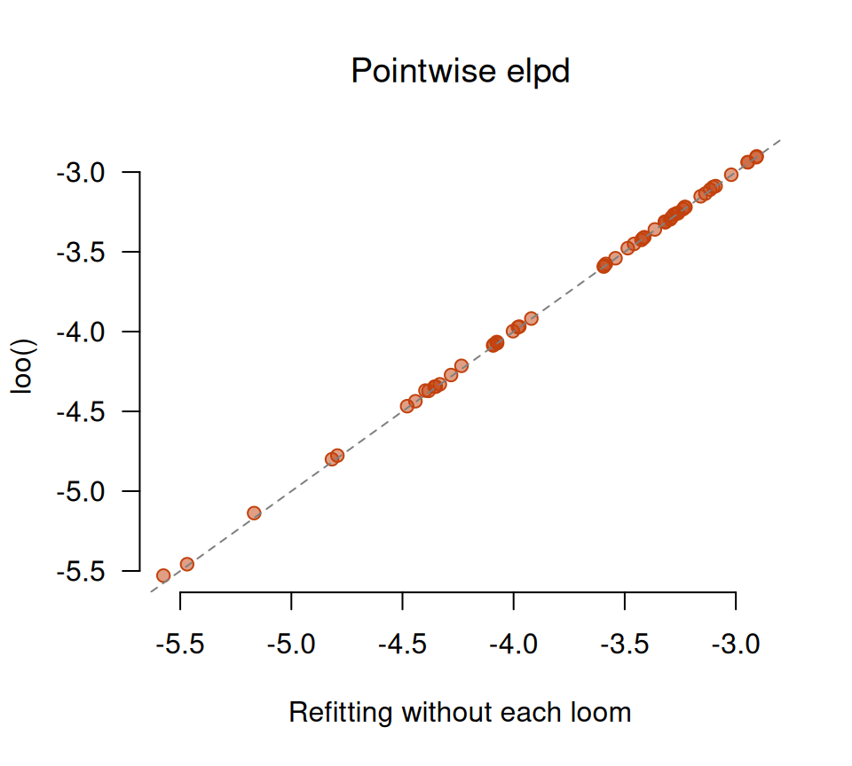

library(inlavanilla)
y <- warpbreaks$breaks
X <- model.matrix(~ wool * tension, data = warpbreaks)
colnames(X)[1] <- "intercept"Predictive accuracy from one fit
Leave-one-out cross-validation (LOO) asks how well a model predicts each observation when that observation is left out of the fit. Summed over the observations, this is the expected log predictive density, \(\mathrm{elpd}_{\mathrm{loo}}\), and it compares models on the scale of the data, whatever their parameters.
Refitting once per observation is slow. loo() gets the answer from the one fit, with no refits and no posterior draws: it expands each observation’s log-likelihood to second order around the posterior (Alhyari et al., 2026). waic() gives the widely applicable information criterion from the same expansion.
Both need the log-likelihood one observation at a time, which inla_vanilla() never sees. So write the model in three pieces:
-
loglik(theta, ...), the vector of log-likelihood terms, one per observation; -
logprior(theta), the log-prior, with any Jacobian; -
logpost(theta, ...), which issum(loglik(theta, ...)) + logprior(theta).
Warp breaks
The warpbreaks data count the breaks in the warp yarn on 54 looms, by wool (A or B) and tension (low, medium or high), with nine looms for each of the six combinations. We model the counts on the log scale, with an interaction between wool and tension.
A Poisson model
The log-likelihood terms, the log-prior and their sum:
loglik_pois <- function(theta, X, y) {
dpois(y, lambda = exp(drop(X %*% theta)), log = TRUE)
}
logprior_beta <- function(beta) {
# N(0, 5^2) on the intercept and N(0, 2.5^2) on the effects
sum(dnorm(beta, 0, c(5, rep(2.5, length(beta) - 1)), log = TRUE))
}
logpost_pois <- function(theta, X, y) {
sum(loglik_pois(theta, X, y)) + logprior_beta(theta)
}
init_pois <- setNames(numeric(ncol(X)), colnames(X))
fit_pois <- inla_vanilla(logpost_pois, init_pois, X = X, y = y)
#> ✔ Found the posterior mode in 29 iterations [10ms]
#> ✔ VB mean correction, max shift 0.025σ [14ms]
#> ✔ Fitted 6 skew-normal marginals [19ms]loo() takes the fit, loglik, and the same data:
loo_pois <- loo(fit_pois, loglik_pois, X = X, y = y)
loo_pois
#> ── Leave-one-out cross-validation ────────────────────────────── 54 units ──
#>
#> Estimate SE
#> elpd_loo -242.9 15.0
#> p_loo 20.6 3.0
#> looic 485.9 30.0
#>
#> ✔ Second-order expansion for every unit. Largest leverage k = 0.11, for
#> unit 39.p_loo is the effective number of parameters. Here it is about 21, for a model with 6 parameters: a sign that the model is misspecified. The counts vary much more than a Poisson distribution allows.
A negative binomial model
The negative binomial adds a dispersion parameter \(\phi\): the variance is \(\mu + \mu^2 / \phi\). On the unconstrained scale the parameter is \(\log \phi\), and the prior \(\phi \sim \mathrm{Gamma}(2, 0.1)\) needs the Jacobian of \(\phi = e^{\log \phi}\), which is \(\log \phi\) itself on the log scale:
loglik_nb <- function(theta, X, y) {
beta <- theta[seq_len(ncol(X))]
dnbinom(
y,
size = exp(theta[["log_phi"]]),
mu = exp(drop(X %*% beta)),
log = TRUE
)
}
logprior_nb <- function(theta) {
phi <- exp(theta[["log_phi"]])
logprior_beta(theta[names(theta) != "log_phi"]) +
dgamma(phi, shape = 2, rate = 0.1, log = TRUE) +
theta[["log_phi"]] # the Jacobian
}
logpost_nb <- function(theta, X, y) {
sum(loglik_nb(theta, X, y)) + logprior_nb(theta)
}
init_nb <- c(init_pois, log_phi = 2)
fit_nb <- inla_vanilla(logpost_nb, init_nb, X = X, y = y, silent = TRUE)
loo_nb <- loo(fit_nb, loglik_nb, X = X, y = y)
loo_nb
#> ── Leave-one-out cross-validation ────────────────────────────── 54 units ──
#>
#> Estimate SE
#> elpd_loo -202.2 4.8
#> p_loo 6.0 0.8
#> looic 404.3 9.6
#>
#> ✔ Second-order expansion for every unit. Largest leverage k = 0.23, for
#> unit 24.Now p_loo is close to the 7 parameters.
Comparing the models
The difference in elpd between two models fitted to the same observations, and its standard error, come from the paired differences of their pointwise terms:
The negative binomial predicts better, by about four standard errors. Does it need the interaction? Fit the additive model with the same log-likelihood and prior, on a smaller design matrix:
X_add <- model.matrix(~ wool + tension, data = warpbreaks)
colnames(X_add)[1] <- "intercept"
init_add <- c(setNames(numeric(ncol(X_add)), colnames(X_add)), log_phi = 2)
fit_add <- inla_vanilla(logpost_nb, init_add, X = X_add, y = y, silent = TRUE)
loo_add <- loo(fit_add, loglik_nb, X = X_add, y = y)
elpd_diff(loo_nb, loo_add)
#> elpd_diff se
#> 2.047182 2.718401The interaction model is ahead, but by less than one standard error: the data cannot tell the two apart.
The results have the layout of the loo package’s objects, so loo::loo_compare() gives the same comparison as a table:
loo::loo_compare(list(poisson = loo_pois, nb = loo_nb, nb_additive = loo_add))
#> model elpd_diff se_diff p_worse diag_diff diag_elpd
#> nb 0.0 0.0 NA
#> nb_additive -2.0 2.7 0.77 N < 100
#> poisson -40.8 10.6 1.00 N < 100
#>
#> Diagnostic flags present.
#> See ?`loo-glossary` (sections `diag_diff` and `diag_elpd`)
#> or https://mc-stan.org/loo/reference/loo-glossary.html.waic() takes the same arguments. With no observation dominating the fit, it is close to the LOO:
waic(fit_nb, loglik_nb, X = X, y = y)
#> ── WAIC ──────────────────────────────────────────────────────── 54 units ──
#>
#> Estimate SE
#> elpd_waic -202.0 4.8
#> p_waic 5.9 0.8
#> waic 404.1 9.6
#>
#> ✔ Second-order expansion for every unit.Checking against refitting
The brute-force LOO refits the model without each observation in turn and averages that observation’s likelihood over the refitted posterior: \[ \log p(y_i \mid y_{-i}) = \log \int p(y_i \mid \vartheta) \, p(\vartheta \mid y_{-i}) \, d\vartheta. \] Here the integral is an average over copula draws. The draws need only the skew-normal marginals, so the refits skip the VB correction.
set.seed(1)
refit_elpd <- function(i) {
fit_i <- inla_vanilla(
logpost_nb,
init_nb,
X = X[-i, ],
y = y[-i],
vb = FALSE,
silent = TRUE
)
ll <- sampling(
fit_i,
4000,
fun = loglik_nb,
X = X[i, , drop = FALSE],
y = y[i]
)
max(ll) + log(mean(exp(ll - max(ll))))
}
time_refit <- system.time(
elpd_refit <- vapply(seq_along(y), refit_elpd, numeric(1))
)
time_loo <- system.time(loo(fit_nb, loglik_nb, X = X, y = y))
c(refits = time_refit[["elapsed"]], loo = time_loo[["elapsed"]])
#> refits loo
#> 3.921 0.003
c(refits = sum(elpd_refit), loo = loo_nb$estimates["elpd_loo", "Estimate"])
#> refits loo
#> -202.6061 -202.1721
plot(
elpd_refit,
loo_nb$pointwise[, "elpd_loo"],
xlab = "Refitting without each loom",
ylab = "loo()",
main = "Pointwise elpd",
font.main = 1,
pch = 21,
bg = grDevices::adjustcolor("#C2410C", 0.5),
col = "#C2410C",
las = 1,
bty = "n"
)
abline(0, 1, lty = 2, col = "grey50")
The two agree loom by loom, to within 0.05 nats, and their totals differ by 0.4, a tenth of the standard error. loo() took a fraction of the time of the 54 refits.
Leaving out what?
loglik decides the unit that is left out. One term per observation leaves out one observation at a time. For grouped data, sum each group’s terms, so that loglik returns one term per group: loo() then leaves out a whole group at a time, and estimates how well the model predicts a new group (leave-one-cluster-out; Alhyari et al., 2026). Either way the units must be conditionally independent given the parameters, so that the log-likelihood is the sum of the terms.
Influential observations
Each unit’s k, in pointwise[, "k"], is the largest share of the posterior precision it carries in any direction of the parameter space. A value close to 1 means that the unit alone pins down some combination of the parameters. At \(k \ge 1\) the rest of the data and the prior cannot identify that combination without it, the second-order term does not exist, and loo() falls back to the first-order expansion for every unit, with a warning. Here no loom comes close:
summary(loo_nb$pointwise[, "k"])
#> Min. 1st Qu. Median Mean 3rd Qu. Max.
#> 0.09739 0.10298 0.11533 0.12795 0.14013 0.22925References
Alhyari, M., Jamil, H., Montcho, H., & Rue, H. (2026). Deterministic leave-one-cluster-out cross-validation for multilevel Bayesian models (arXiv:2609.00670 [stat.ME]). arXiv. https://doi.org/10.48550/arXiv.2609.00670
Vehtari, A., Gelman, A., & Gabry, J. (2017). Practical Bayesian model evaluation using leave-one-out cross-validation and WAIC. Statistics and Computing, 27(5), 1413–1432. https://doi.org/10.1007/s11222-016-9696-4